Drexel CHI UX Club Website: Scripting for Accessibility
Name: Mihika Patel | Role: UX Designer & Frontend Developer | Time: 3 Months | Tools: Figma, VSCode, HTML, CSS
Overview
The Drexel CHI User Experience Club website was designed and developed to provide an accessible, inclusive, and modern digital presence for my on-campus student organization. The project focused on ensuring that all users - including those using assistive technologies - could easily navigate and interact with the site.
The primary challenge was translating accessibility best practices into a fully functional website while maintaining a strong visual identity for the club. To address this, I created an accessible color palette, designed wireframes in Figma, and developed the final site using semantic HTML and accessible interaction patterns. Key accessibility features include proper semantic structure, ARIA labels, skip navigation links, dark mode support, and compatibility with screen readers such as VoiceOver.
The final result is a responsive and accessible website that clearly communicates the club's mission, simplifies navigation for prospective members, and demonstrates how thoughtful UX design can support inclusivity on the web.
Context and Challenge
Background
The Drexel CHI (Computer Human Interaction) User Experience Club is a student-led organization that brings together students interested in UX design, research, and human-computer interaction. The club hosts workshops, networking opportunities, and community events that help students gain real-world UX experience.
Pictures of the Drexel CHI UX Club:
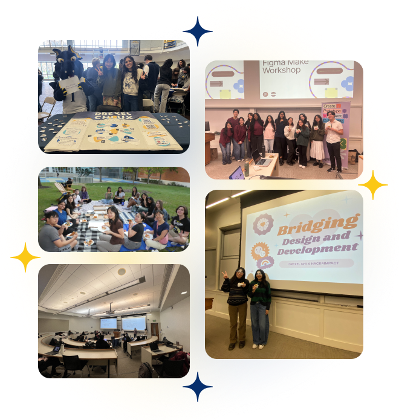
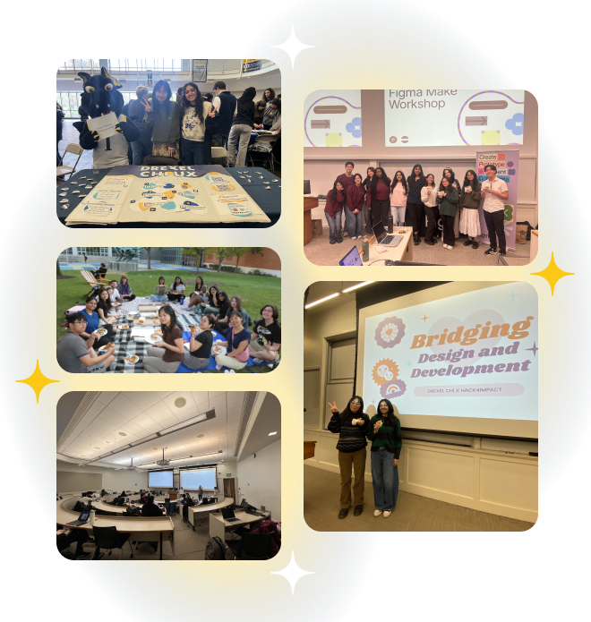
Despite the club's active presence, it lacked a dedicated, accessible website where students could easily learn about events, get involved, and contact the organization.
This project was completed as part of an accessibility-focused web design course, with the goal of applying accessibility standards directly within the design and development process.
Problem
Many student organization websites unintentionally exclude users by overlooking accessibility best practices. Poor color contrast, missing semantic structure, and lack of screen reader support can make sites difficult, or impossible, to use for individuals relying on assistive technologies.
The challenge for this project was to design and develop a website that:
- Meets accessibility best practices
- Supports screen readers and keyboard navigation
- Maintains a cohesive and engaging visual identity for the club
Goals and Objectives
This project aimed to:
- Design a fully accessible website for the Drexel CHI User Experience Club
- Ensure WCAG-conscious color contrast and visual accessibility
- Implement semantic HTML structure for improved screen reader support
- Support keyboard navigation and VoiceOver compatibility
- Provide a clear and welcoming digital entry point for prospective members
Accessibility Guidelines:
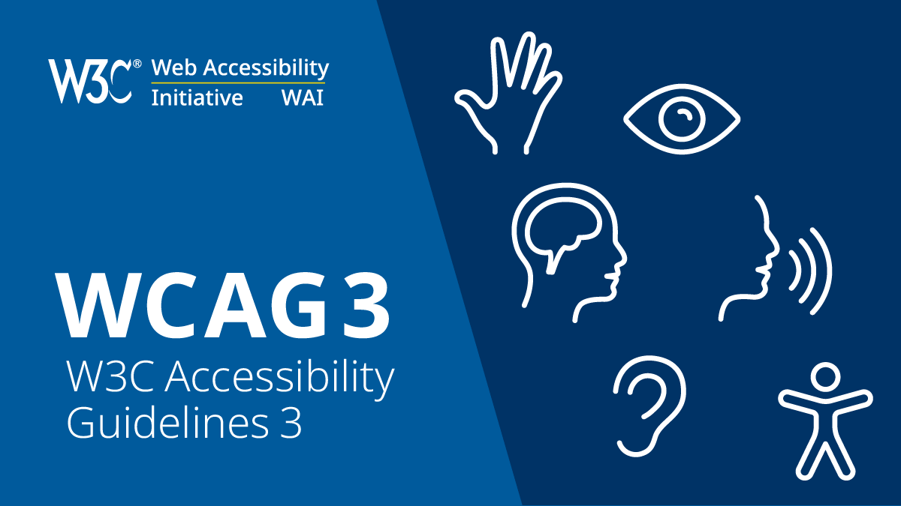
This was a solo project, where I was responsible for the full design and development process, including UX design, prototyping, and front-end implementation.
Process and Insight
The project followed a structured UX process that moved from accessibility research and planning to design and development.
Robust Color System
The design process began by establishing a robust color palette that maintained the strong visual branding of the club while meeting accessibility requirements. This meant balancing the club's recognizable visual identity with color combinations that remained readable across different backgrounds and interface components. Establishing this system early ensured that accessibility considerations informed every visual decision moving forward.
Using contrast checking tools, I tested combinations of colors to ensure they met WCAG contrast standards for readability across different interface components. I also evaluated how these colors performed in both light and dark mode environments to maintain consistency and legibility across different viewing conditions.
This step ensured that text, buttons, and UI elements remained readable for users with visual impairments. It also created a flexible color system that could scale across additional pages or components in the future while maintaining accessibility standards.
Robust color palette:
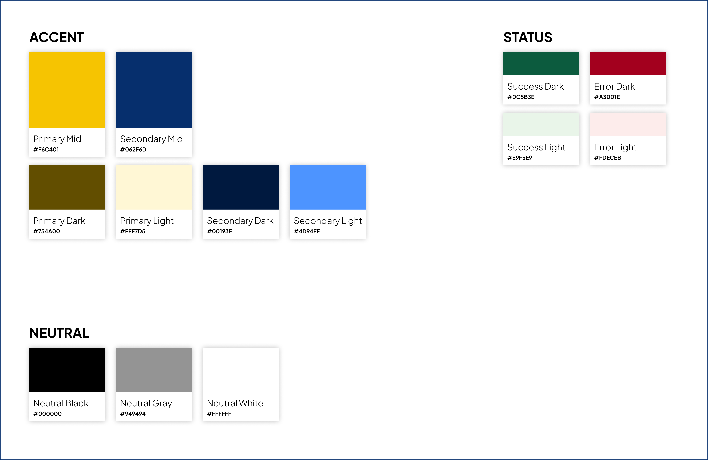
APCA color palette:
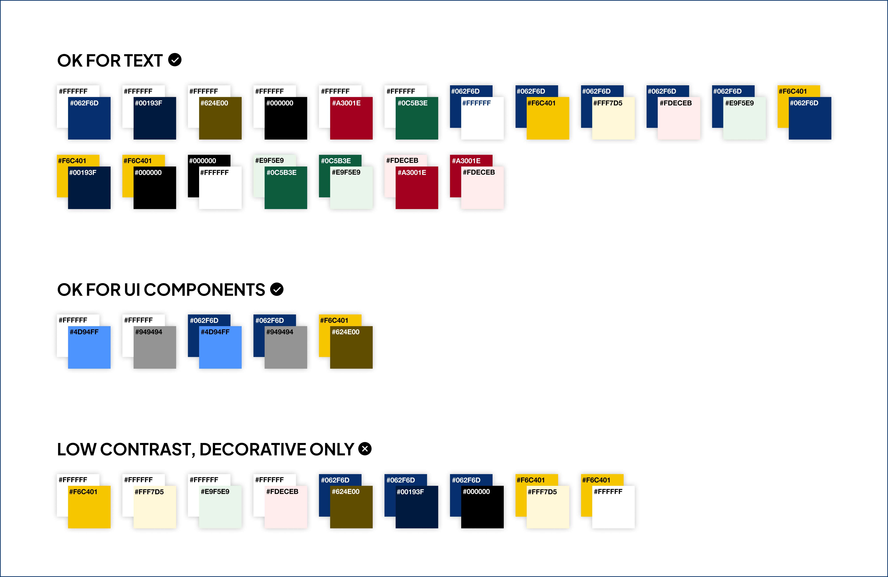
Wireframes
Before development, I created wireframes in Figma to plan the site structure and layout. These wireframes allowed me to experiment with layout decisions quickly while focusing on usability as well as visual styling. By prioritizing structure first, I was able to ensure that content hierarchy and navigation patterns would remain intuitive for a wide range of users.
Wireframes:
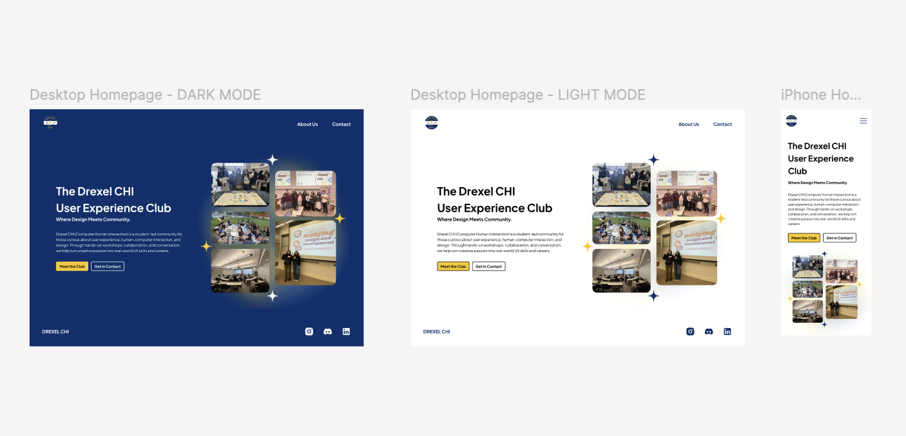
The wireframes focused on:
- Clear content hierarchy - Ensuring that headings, sections, and calls to action guide users through the page in a logical order.
- Simple and predictable navigation - Designing a navigation structure that allows users to easily move between key sections of the site without confusion.
- Logical grouping of information - Organizing related content into clear sections so users can quickly scan and locate relevant information.
This allowed the layout to prioritize usability and accessibility before visual styling was introduced. By resolving structural decisions early, the transition from wireframes to development became significantly smoother.
Development and Semantic Structure
After finalizing the wireframes, I translated the designs into code. This stage involved carefully converting the visual layout into a semantic and maintainable HTML structure while preserving the accessibility goals established earlier in the design process.
The site was built using semantic HTML and structured CSS, with a strong emphasis on accessibility and maintainability. Prioritizing clean, semantic code ensures that both assistive technologies and future developers can easily interpret the structure of the website.
Key implementation decisions included:
- Using proper semantic tags such as header, nav, main, section, and footer instead of divs and spans. This improves how screen readers interpret the page structure.
- Ensuring orderly and logical heading structure (h1-h3). This allows assistive technologies to understand the hierarchy of content and enables easier navigation through headings.
- Creating consistent layout components across pages. Shared patterns such as navigation, section layouts, and spacing help create a predictable user experience.
These decisions improve both accessibility and long-term maintainability. They also create a more scalable foundation for future updates or additional pages.
Semantic HTML:
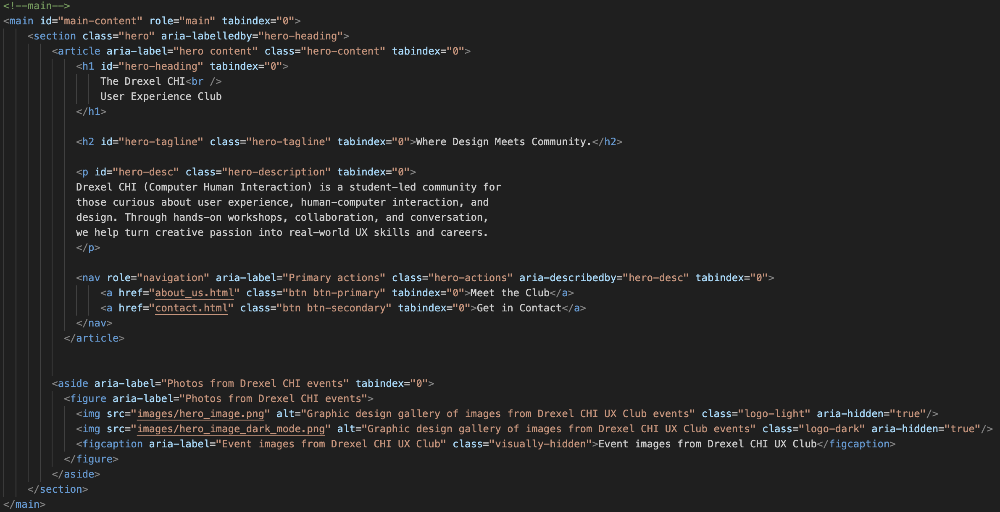
Accessibility Features
Accessibility was integrated throughout development rather than added as an afterthought. This approach ensured that accessibility considerations influenced both design decisions and technical implementation.
Key accessibility features included:
- Skip Navigation Links - Allows keyboard users and screen readers to quickly jump to the main content, which prevents users from having to tab through repeated navigation elements on every page.
- ARIA Labels - Provides additional context for screen readers where necessary. These labels help clarify the purpose of interactive elements that may not be fully communicated through visible text alone.
- Dark Mode - Supports alternative viewing preferences and reduces visual strain. It was carefully tested to ensure that contrast and readability remain accessible.
- Keyboard Navigation - Ensures interactive elements can be navigated without a mouse, which allows users who rely on keyboard input to move through links, buttons, and form fields efficiently.
- Screen Reader Compatibility - The site was tested using VoiceOver to confirm that content structure and form interactions are properly announced. Testing ensured that headings, navigation regions, and form inputs were announced clearly and in a logical order.
- Accessible Form Validation - Form inputs clearly communicate errors and success states. Error messages are programmatically associated with inputs so that assistive technologies can properly convey feedback to users.
Skip Navigation Links:
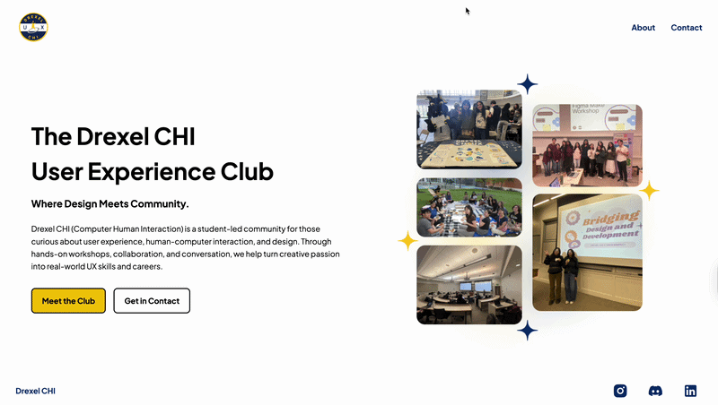
ARIA Labels:
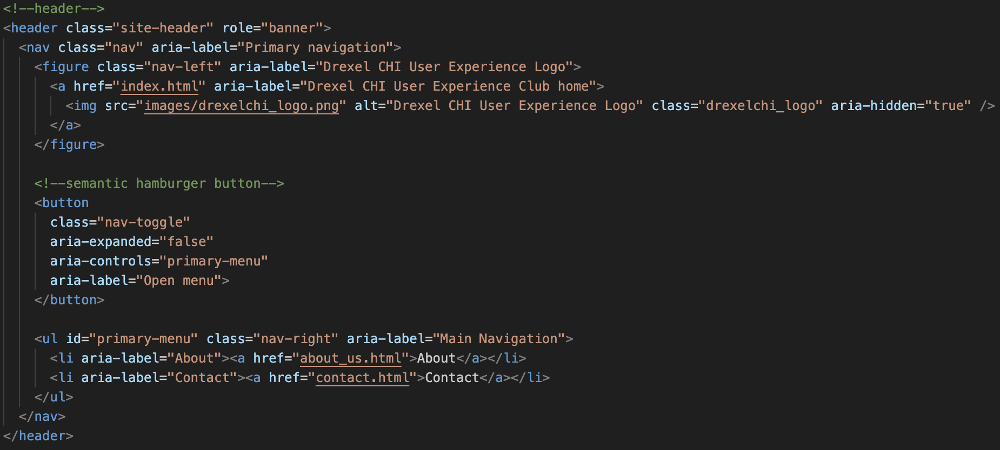
Dark Mode:
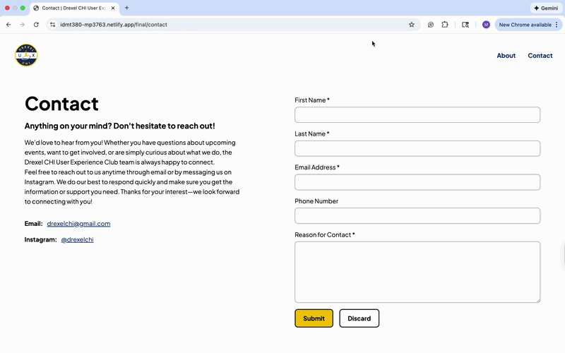
Keyboard Navigation:
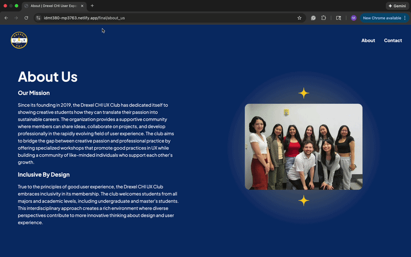
Screen Reader Compatibility:
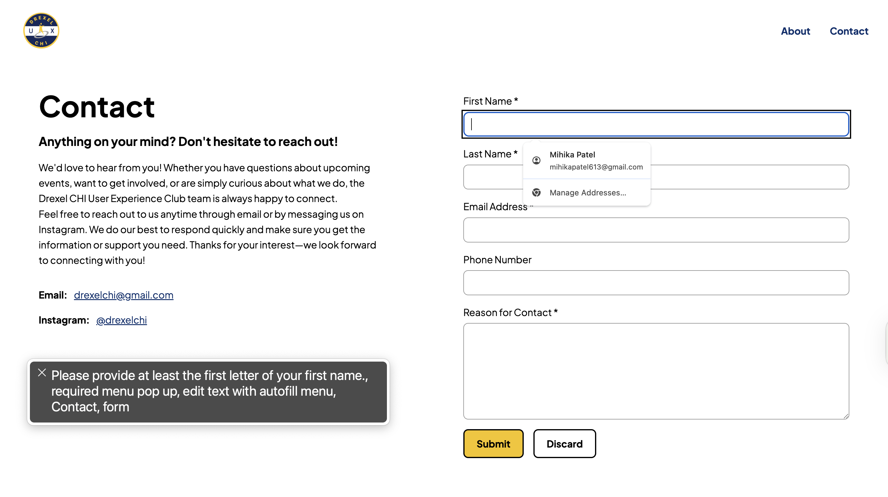
Accessible Form Validation:
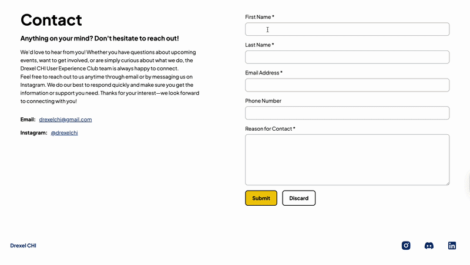
Solution
The final result is a responsive and accessible website that provides a welcoming digital home for the Drexel CHI User Experience Club. The design emphasizes clarity and usability, helping new students quickly understand what the club offers and how they can get involved.
The homepage introduces the organization with a clear value proposition and directs users toward key actions such as learning about the club or getting in touch. Strategically placed calls to action guide users toward the most important interactions without overwhelming the page with excessive content.
The design emphasizes:
- Web Accessibility - Accessibility was considered throughout the site, ensuring users with a range of abilities can navigate and interact comfortably.
- Clear Navigation Structure - Users can quickly understand where to go and how to access information about the club.
- Responsive Layout - The interface adapts to different screen sizes while maintaining usability.
Overall, the design balances visual clarity, usability, and accessibility, ensuring that all users can interact with the site comfortably.
Website walkthroughs:
This video demonstrates the desktop version of the Drexel CHI UX Club website in light mode. The walkthrough begins on the homepage, where the navigation bar provides links to the Home, About, and Contact pages. The recording shows how users can navigate the site using the main navigation menu and how the layout presents information about the organization. It also demonstrates accessible interaction features such as skip navigation links, semantic structure for screen readers, and keyboard navigation through the page.
This video shows the mobile version of the Drexel CHI UX Club website in dark mode. The recording demonstrates how the layout adapts to smaller screens while maintaining usability and accessibility. The navigation menu is optimized for mobile interaction, and content sections adjust responsively to fit the screen. The walkthrough highlights the dark mode interface, readable contrast, and the overall responsive design that ensures the website remains accessible and easy to navigate across devices.
View the Final WebsiteResults
The project was a success; it demonstrated how accessibility can be integrated into the design and development process from the beginning.
Key outcomes include:
- A fully functional and accessible website for the Drexel CHI UX Club
- Implementation of accessibility features such as semantic HTML, ARIA labels, skip links, and screen reader compatibility.
- A responsive and visually cohesive interface that aligns with the club's identity.
Through this project, I gained deeper experience in accessible front-end development and UX design, particularly in applying accessibility standards directly within the design workflow.
Lessons Learned
One of the most valuable lessons from this project was the importance of considering accessibility early in the design process. Designing with accessibility in mind from the start prevents the need for complex fixes later in development. Building accessibility into the color palette, layout, and semantic structure from the beginning made the final implementation significantly more effective.
In future iterations, I would expand usability testing with a wider range of assistive technologies and users to further refine the experience. Conducting usability testing with diverse users would provide additional insights into how different individuals interact with the site and help uncover opportunities for improvement.